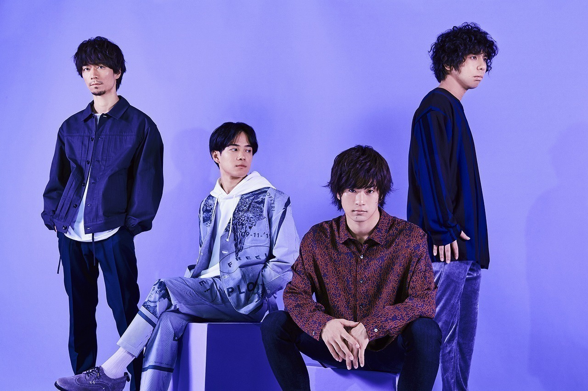

フレデリック
プロフィール
神戸にて結成された三原健司(Vo./Gt.)、三原康司(Ba.)の双子の兄弟と、赤頭隆児(Gt.)、高橋武(Dr.)で編成される4人組バンド。 独特なユーモア性、そして幅広い音楽的背景から生みだされる繰り返されるリズムと歌詞は中毒性が高く、”忘れさせてくれない楽曲群”と話題に。 2022年6月には国立代々木競技場第一体育館にて、4度目のアリーナ公演を開催。2022年9月より、全国30箇所を回るツアーを開催中。 どのシーンにも属さない「オンリーワン」の楽曲で、変化に挑み進化を重ねる。